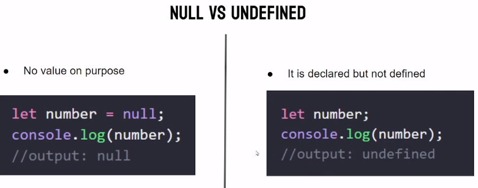

Blog Questions
Blog Questions
Discuss the scope of var, let, and const ?
Answer: var, let, and const are three ways to declare variables in JavaScript, each with its own scope and behavior.
- var: Variables declared with var are function-scoped and are hoisted to the top of their function or global scope. They can be both reassigned and redefined within the same scope.
- let: Variables declared with let are block-scoped, meaning they are only accessible within the block they are defined in. They are also hoisted but not initialized, so referencing them before declaration results in an error. let variables can be reassigned within the same scope but cannot be redefined.
- const: Variables declared with const are also block-scoped and hoisted but cannot be reassigned or redefined after their initial assignment. However, if the variable is an object or array, its properties or elements can be modified.
| Key | Scope | Can Be Redeclared | Can Be Reassigned | Hoisting Behavior |
|---|---|---|---|---|
| var | function & global | yes | yes | initialized with undefined |
| let | block | no | yes | uninitialized |
| const | block | no | no | uninitialized |
Tell us the use cases of null and undefined
Answer: null and undefined are two distinct values in JavaScript, and they have different use cases:
- null: null is used to indicate intentional absence of a value, clearing a variable or property.
- undefined: undefined is the default value for uninitialized variables or non-existent properties in objects, signaling lack of definition or initialization.

What do you mean by REST API?
Answer:
A REST API is a way for computer systems to communicate over the internet. It uses standardized rules and URLs to access and manipulate data.
| REST API Methods | Description |
|---|---|
| GET | Retrieve information about the REST API resource |
| POST | Create a REST API resource |
| PUT | Update a REST API resource |
| DELETE | Delete a REST API resource or related component |